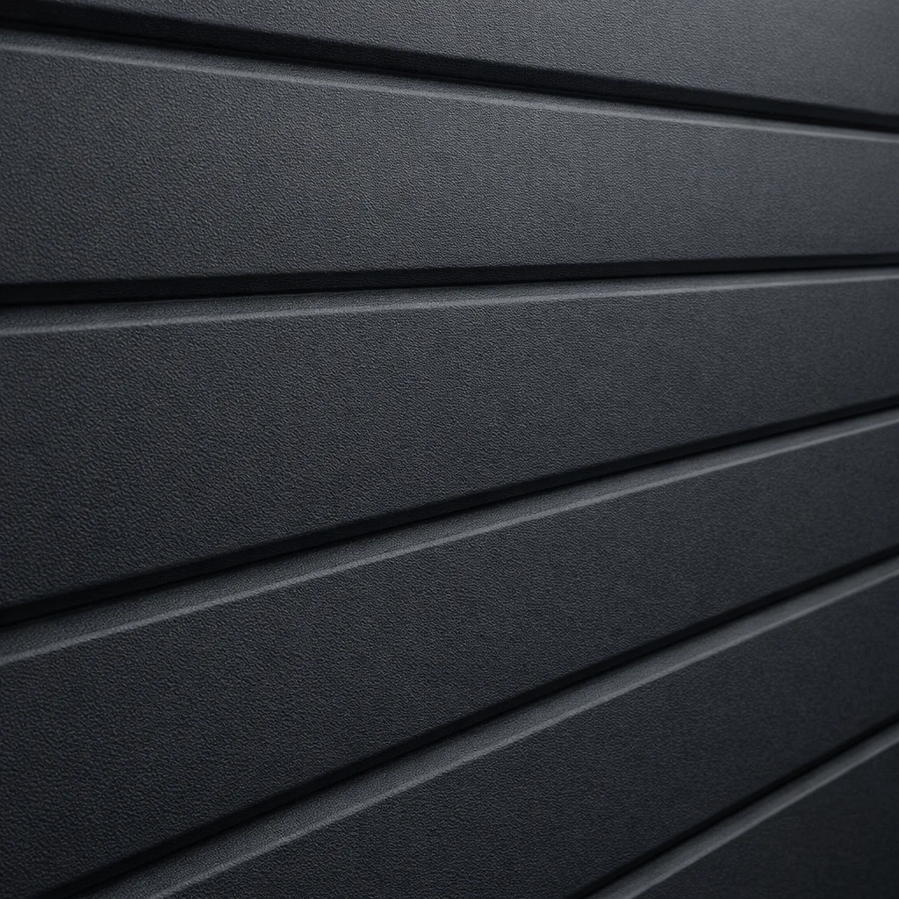
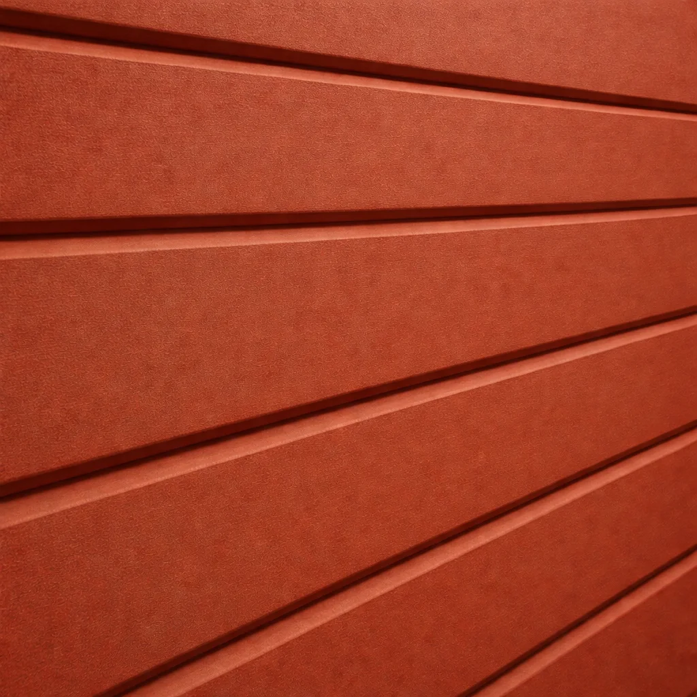
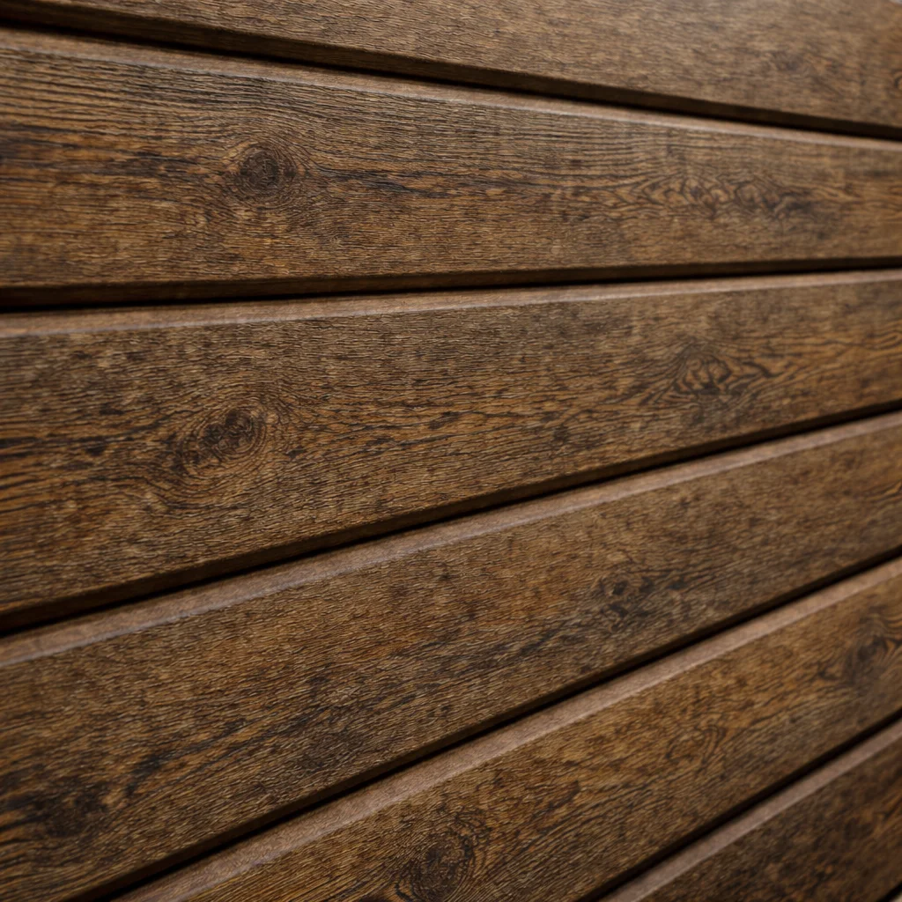
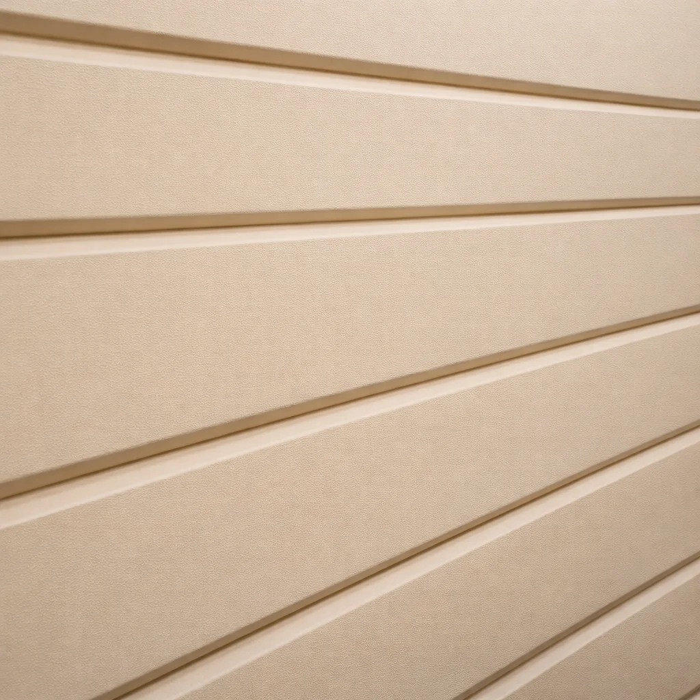
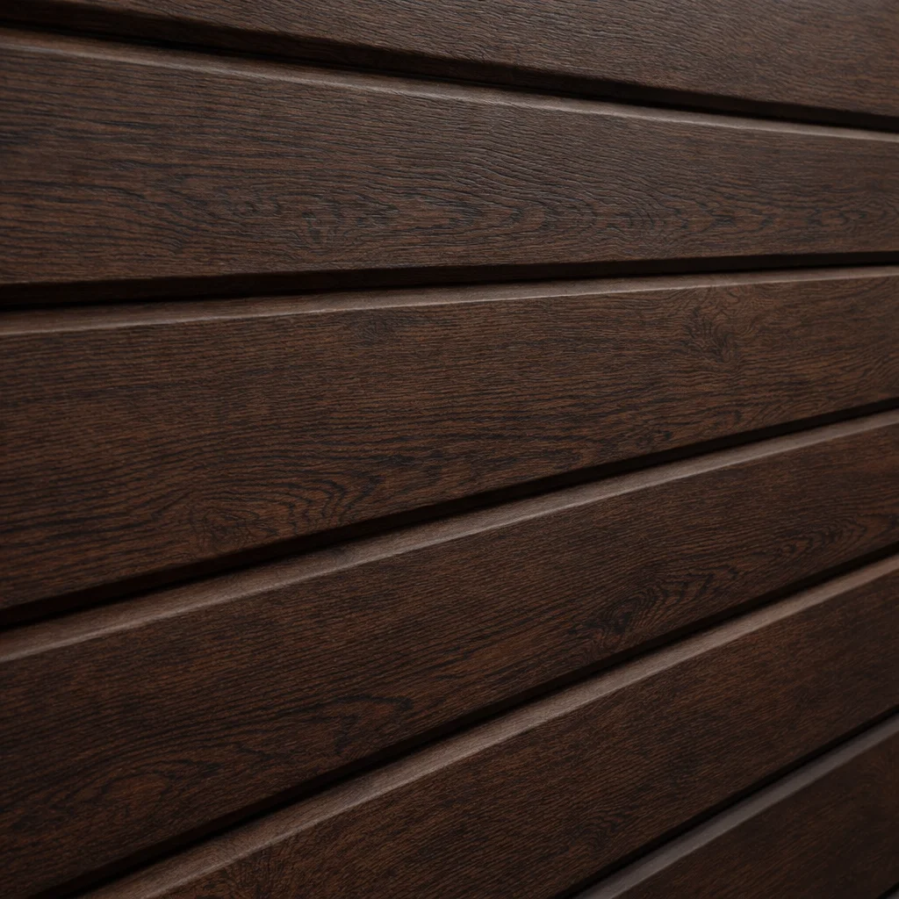
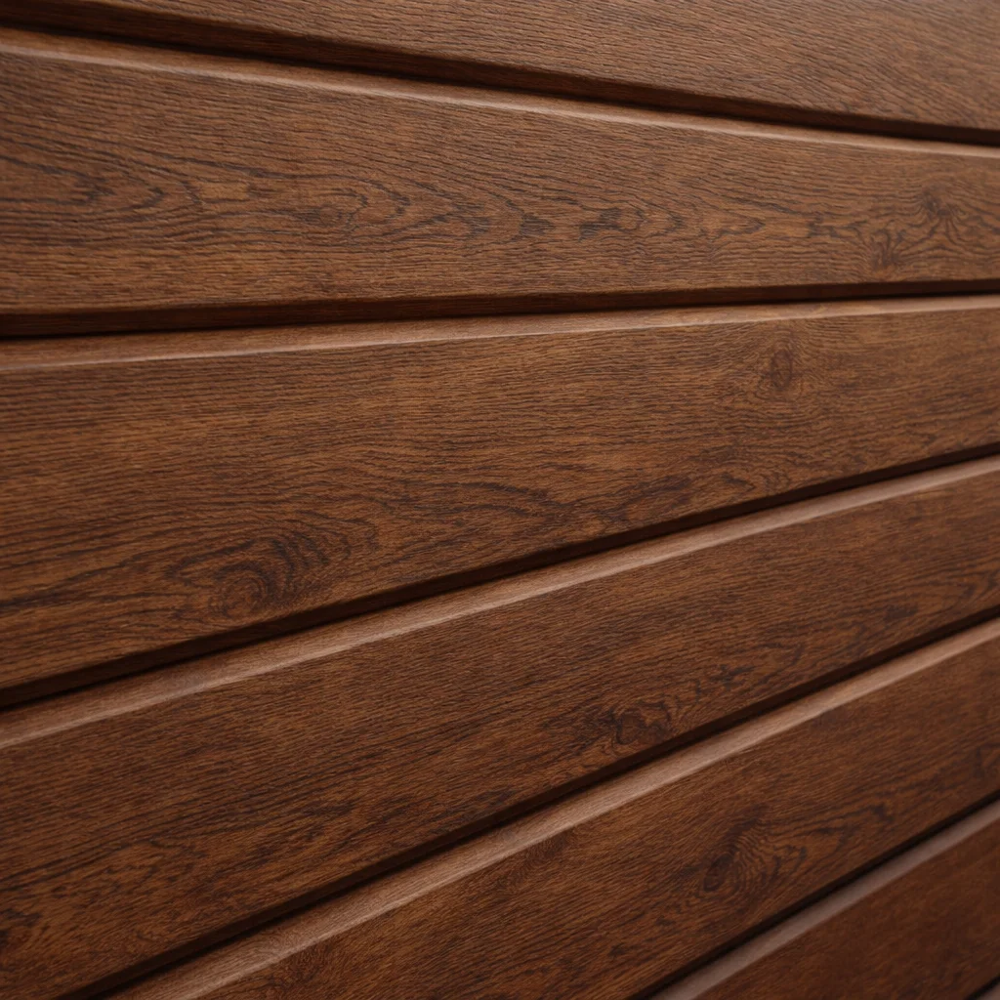
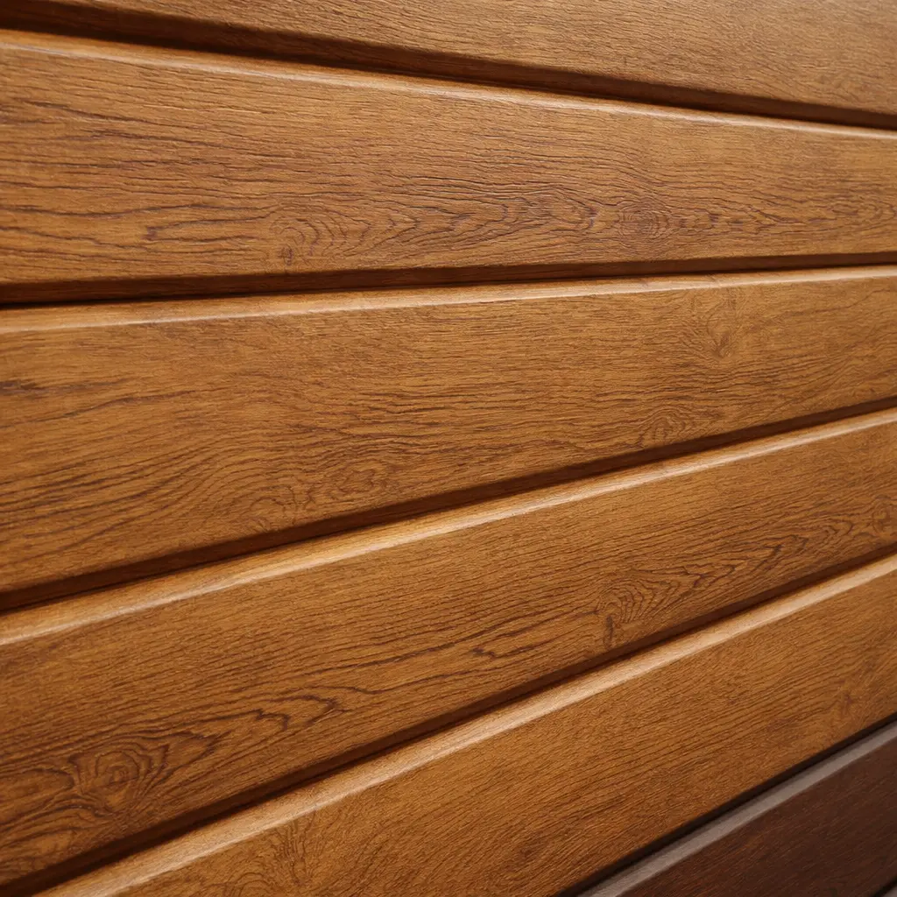
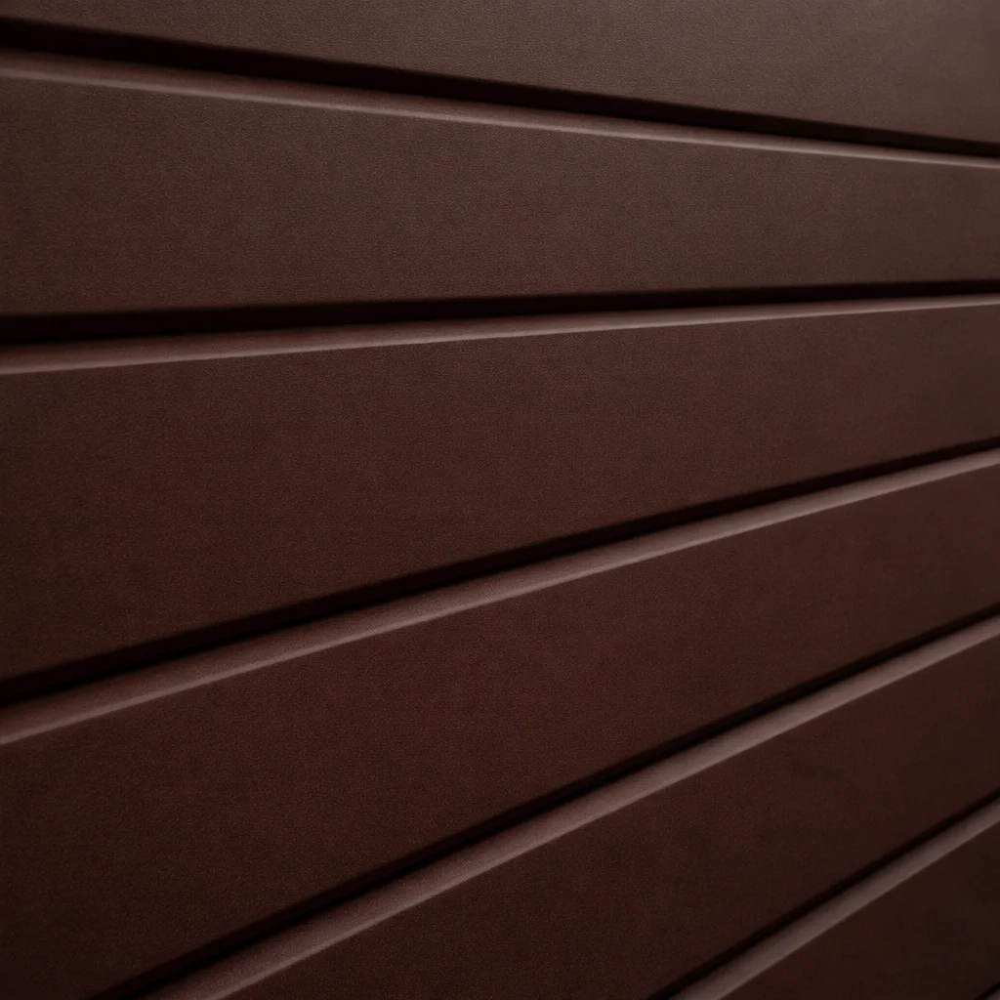

ЦВЕТА И ФАКТУРЫ
Не только базовые цвета
В конфигураторе показаны базовые варианты для быстрого подбора общего образа. Но в реальности доступны покрытия и фактуры, которые могут сделать гараж заметно выразительнее.
Цвет — это не просто оттенок
Разные покрытия дают разный визуальный эффект: от спокойной матовой поверхности до металлика, древесной текстуры или декоративной имитации натуральных материалов.
Какие решения бывают
Гладкие базовые цвета
Универсальная классика: аккуратный вид, который легко вписывается в большинство участков и фасадов.
Матовые покрытия
Визуально дороже и спокойнее: цвет выглядит глубже, а поверхность — более статусно и собранно.
Металлики
Более эффектная подача: покрытие “оживает” на свету и придаёт гаражу выразительный современный характер.
Текстурные покрытия
Имитации дерева, камня и других материалов для внешнего вида с “архитектурным” акцентом и ощущением премиальности.
Примеры покрытий
Ниже — примеры того, как покрытие меняет характер и восприятие гаража.

Антрацит
Строгий современный тёмный тон с премиальным характером

Терракотовый
Тёплый архитектурный оттенок с более выразительным характером

Античный дуб
Декоративная древесная фактура с более сложным и дизайнерским видом

Белёный дуб
Светлая древесная текстура для более мягкого и спокойного образа

Морёный дуб
Глубокая тёмная древесная фактура для более статусного образа

Орех
Тёплая насыщенная древесная текстура с дорогим визуальным ощущением

Золотой дуб
Самая понятная и продающая древесная фактура — тёплая, уютная, “жилая”

Шоколадно-коричневый
Глубокий тёплый оттенок, который хорошо работает рядом с деревом и тёмными деталями
Как выбирать без ошибки
Тёмные цвета выглядят строже и визуально дороже
Фактура добавляет глубину, которую не видно у обычной гладкой поверхности
Смотрите не только на сам цвет, но и на сочетание стен, крыши и деталей
Цвет и фактура на экране могут отличаться от реальных образцов. Для точного подбора мы ориентируемся на физические каталоги и образцы производителя.